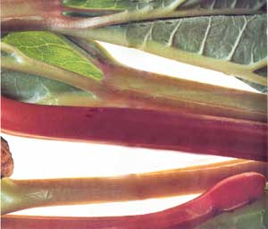
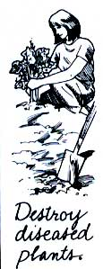

Kitchen Garden About Rhubarb
March/April 1989
A mature plant can produce six pounds of stalk per year.
The "tube technique" will help produce longer rhubarb stalks.
The tart, tasty strawberry substitute.
By Sara Pacher
YOU WON'T HAVE TO SPEND ALL winter and half the following summer yearning for freshly picked, homegrown fruit once you put in a rhubarb patch. Though this plant is actually a perennial vegetable, its fruity-tasting stalks can be transformed into delicious pies, sauces, jams, jellies and conserves. They can also be baked or stewed and used as a topping for hot cereal or to add a special zing when mixed with other cooked fruit. The sweetened juice makes a refreshing cold drink, and the pulverized stems, fermented with sugar, will produce an interesting wine.
Curiously, despite its being delicious, low in calories and fat and a good source of vitamin A, potassium and some vitamin C, rhubarb was slow to reach the dinner table. The type known as Rheum officinale has been cultivated in China and Tibet for medicinal purposes for nearly 3,000 years, but Rheum rhaponticum , the parent plant of most of the rhubarb we eat today, is thought to have originated in the Volga River region of Siberia, and wasn't introduced to Europe until the 17th century. From there, it eventually made its way to this country, where it became commonly known as "pie plant."
Types and Tastes
This hardy perennial grows two to four feet tall, sporting enormous green leaves on strong red, green or reddish green stalks. Both its leaves and roots contain oxalic acid, which is poisonous, so only the stems (properly called petioles) should be eaten.
Few people bother to grow rhubarb from seed, since doing so would add yet another year to the three usually required to produce the first good harvest. However, should you decide to go this route, you'll probably be most successful with an old-fashioned, very tart variety called Victoria, whose green stalks are blushed with red. (When starting with seeds, sow them one inch deep outdoors in April, thin the seedlings to six inches apart, and then establish them in a permanent bed in the fall.)
For a quicker, more reliable harvest, plant the fleshy root divisions called crowns, or corms. You'll find them available from many local and mail-order nurseries or from a rhubarb-growing fellow gardener who is dividing old plants. Just make sure each crown has two well-formed "eyes" or buds.
Canada Red is one of the more popular varieties. Its heavy, juicy stalks are tender and are bright red inside and out. They keep their color when cooked, too, making them perfect for canning or freezing. Furthermore, the plant is slow to go to seed. Valentine is another sweet type that requires very little sugar to make it delicious, but MacDonald is sweeter still. Its big, bright red, flavorful stalks will produce sauces and pies with a deep pink hue. It's also unnecessary to scrape or peel MacDonald's tender stalks-a definite advantage, since there are many nutrients in the stalks' outer surfaces. Gardeners who prefer a tarter variety should try Flare, whose stems may be red or green.
When selecting a rhubarb, keep in mind that most varieties like cool, moist summers and winters where temperatures are cold enough to freeze the crowns and keep the plants dormant. If the mean temperatures in your area are above 40 °F in winter and 75°F in summer, you should pick a type, such as Cherry Red, that's more suited to mild winters. (This particular cultivar has tart, juicy stalks that are red on the outside and green inside.) In very warm areas, where rhubarb is sometimes treated as an annual, plants might remain dormant in the summer and leaf out in the winter.
How to Plant
Since there's a long wait between planting and harvesting, patience is required to grow rhubarb-but that patience is well rewarded. Once established, you can reap this attractive vegetable's succulent stalks for 10 to 15 years with a minimum of effort and with little worry about pests or diseases, and it only takes some six to 10 plants to provide
for an average family's needs. (A healthy, mature plant can produce six or more pounds of edible rhubarb per year.)
True, rhubarb takes up quite a bit of space; three plants require a 10-foot row. But rhubarb is too pretty to tuck out of sight. People with small gardens might use it as part of the front-yard landscape. Just remember, wherever it's put, it will be there for years to come. And because its home is relatively permanent, the initial preparation of the rhubarb bed is very important.
In cool, temperate climates, choose a sunny, sheltered spot to plant your crop, keeping in mind that rhubarb doesn't compete well with tree or hedge roots or other cultivated plants. In warmer climates, a semi-shaded area is probably better, and in the Southwest, put the bed on the north side of a fence or building to provide partial shade and protection from drying winds.
While rhubarb does well in a variety of soils, it prefers a sandy loam with a pH of 5.0 to 6.8 (5.8 is ideal). Whatever the soil type, good drainage is essential, because soggy earth will cause the roots to rot. Rhubarb is also a heavy feeder, so-with plenty of well-rotted manure and compost on hand-dig a bed, trench or individual holes some two to three feet deep, setting aside the topsoil. Fill the depression with compost and manure to within one foot of the top. For each plant, mix in a shovelful of bone meal or phosphate rock and two shovelfuls of granite dust or greensand. The top layer should be a mixture of topsoil and compost.
In the early spring (about four to six weeks before the average date of the last frost), plant the crown divisions (which should never be allowed to dry out) at three-foot intervals in rows four feet apart. Place each corm two to three inches deep-just enough to position the pink growing tips an inch or two below the surface. Press the earth down firmly, and water well.
Rhubarb likes even soil moisture and should never be allowed to dry out completely, as this will cut both leaf and stem production, so it's best to mulch with straw or hay when the plants are about four inches tall. The mulch will also help with the necessary task of keeping rhubarb free from competing weeds. Whenever you do weed, be careful not to injure the crowns.
Side-dress the plants with manure at least once during the summer and again in the fall, and always remove seed heads as soon as they appear. Though these flowering stalks are quite attractive, seed production will sap the energy necessary to produce leaves and stems. Once frost has killed back the growth, cover the bed with a deep layer of manure, leaf mold or compost to protect it from heavy freezes.
What to Watch For
If properly cultivated, you'll find rhubarb to be a remarkably pest- and disease-free crop. Hand-pick occasional leaf-eaters and destroy any wild dock growing nearby to prevent infestations of rhubarb curculio, since i dock is also a host to the larvae of these bee-I ties. The tiny creatures punch holes in stalks ; and crowns for feeding and for laying their eggs. Try, therefore, to pick the adults be fore this happens. Failing that, spray with rotenone.
As previously mentioned, soggy soil can cause root rot, or phytophthora crown rot. (Roots that are past their prime are particularly vulnerable.) The disease turns leaves a dull gray-green and causes stems to be thin and limp, except at their abnormally swollen bases. Infected plants should be immediately lifted and destroyed before the disease spreads. You should turn the earth to expose the infected soil to the sun.
How to Harvest and Store
Don't harvest any of the rhubarb stalks the first year, as all their strength needs to be put back into the roots. The second year, you can cut a few stalks, but the first real harvest will begin during spring of the third year. When the stems are one to two feet tall and the leaves are completely developed, grab a stalk near its base and pull-don't cut-it cleanly from the crown with a twisting motion. Remove any small pieces attached to the crown, as these can deteriorate and encourage rot. You can keep harvesting until July, but try not to take more than one-third of the stalks from any one plant, in order to guarantee a good harvest the next season.
Rhubarb will usually produce for many years, but once the stems start to become slender and inferior, the roots need to be dug up and divided. Do this when the plants are dormant, either in the spring or fall. Use a sharp spade to split the corms into four to six pieces, leaving two buds and as much root as possible on each one, and replant them in a well-prepared bed.
Some gardeners routinely divide a few of their established clumps in late October or early November in order to have a constant supply of three-year-old roots for a winter rhubarb harvest that's obtained by forcing. To do this, put the root divisions in a box covered with moist soil, peat or sand, and expose them to the cold for a couple of weeks. Then move them indoors to a spot where the temperature is above 47°F but below 60°F. (If the environment is too cold, growth will be very slow; if too warm, the stalks will be spindly and bland.) Lay the clumps close together in a box, cover with sand or soil, water well, and cover with another box and a sheet of black plastic to keep out the light. Keep the soil moist, and in five to six weeks, you can harvest a midwinter crop. (Expect tall and tasty shoots, but very pale, small, folded-up leaves.) Once the stems are pulled, you'll have to discard the worn-out roots.
For a very early spring crop, you can also force rhubarb outdoors, advancing the normal harvest by several weeks. After the plants have been exposed to a few killing frosts, just water them well, and cover a few with bottomless boxes, barrels, buckets or oil drums, and devise some kind of lid that will allow you to occasionally check on the rhubarb's development. In very cold climates, you should also heap leaves, compost or manure mixed with straw around the outsides of these containers.
Rhubarb will keep well in the refrigerator for two to three weeks. To can it, harvest about two pounds per quart. Choose tender, nicely colored stalks, and (of course) discard the leaves. Cut the rhubarb into one-inch pieces, and put them in a large bowl. Cover them with one-half to one cup of sugar, depending on the sweetness of the plant and your own taste, and let this stand for three or four hours until the rhubarb is floating in syrup. Heat the rhubarb to boiling, and pack it into hot jars to within one-half inch of the top. If you're short of syrup, bring the liquid to that height with boiling water. Run a slim, nonmetal tool around the inside of each jar to release air bubbles, and add more syrup or boiling water if necessary. Put on the lids according to the manufacturer's instructions, and process the jars in a boiling water bath for 10 minutes.
To freeze rhubarb, wash tender young stalks, and cut them into one- or two-inch pieces. Pack these unsweetened into containers, then seal and freeze them-or sweeten and boil the rhubarb before packaging, leaving one-half inch of headspace in the containers. Frozen rhubarb will keep for approximately one year.
Rhubarb Cake
1 / 2 cup unsalted butter
1 1 / 4 cups light brown sugar 2 eggs
1 teaspoon vanilla
2 tablespoons cinnamon
1 1 / 2 cups sifted cake flour
1 teaspoon baking soda
1/3 cup buttermilk, yogurt or sour cream
1 1 / 2 cups rhubarb, cut into 1 / 2 " pieces
1 / 1 cup granulated sugar
Preheat oven to 375°F. Cream butter with brown sugar in a large bowl until light and fluffy. Beat in eggs, one at a time, then beat in vanilla and 1 tablespoon cinnamon. Sift flour and baking soda, and beat this mixture into butter mixture in three parts, alternating with buttermilk. Fold in rhubarb. Pour batter into standard 8" X 8" X 2" glass baking dish. Blend sugar and remaining cinnamon, and sprinkle over top. Bake until a toothpick inserted in the cake comes out clean (about 45 minutes). If the top starts to brown too quickly, lower the oven temperature to 350°F for the last 30 minutes. Top with whipped cream or ice cream.
Rhubarb Ice
1 cup water
1 cup sugar
1 1 / 2 pounds young rhubarb
Juice of 1 lemon
1 pint small strawberries
Combine water and sugar in a saucepan, and bring to a boil to form a syrup. Simmer for 5 minutes while stirring. Add rhubarb, and cook until tender. Add lemon juice and strawberries, and press through a sieve. Put in a covered plastic container, and store in freezer until almost frozen. Take out, scrape down, and refreeze. This recipe will keep well in the freezer for about three weeks.
Rhubarb Chutney
6 cups diced rhubarb
2 cups sugar
1 1 / 2 cups raisins
1 / 2 cup chopped onion
1 / 2 cup vinegar
1 teaspoon salt
1 teaspoon ginger
1 teaspoon cinnamon
1 teaspoon allspice
1 / 2 cup chopped walnuts
Put all ingredients except walnuts in a heavy-bottomed saucepan, and heat to a boil. Reduce heat to simmer, and cook, stirring frequently, for about 30 minutes or until thickened. Cool, then stir in walnuts. Store in a covered container in the refrigerator, where it will keep for at least a month.
SUSAN SATS
RHUBARB RECIPES BY G. HAYES
MOTHER'S GARDENER, SUSAN SIDES, has some advice that's an exception to a rule:
Gardeners are nearly always admonished not to let plants of any kind become leggy, yet with rhubarb that's just what you want. Here's a trick for creating longer, more tender rhubarb stalks.
Not to be confused with forcing , which is a means of stimulating earlier than normal growth, the "tube technique" simply elongates stalks by making plants "reach for the skies."
In early spring, place a large clay pipe, a bottomless bushel basket or a similar tube-shaped object over some of your outdoor rhubarb plants. Be sure to gather up the leaves so they're pointing upward inside the chamber. Following their natural tendency to strain toward light, the leaves will clamber to the top, supported by taller than normal, succulent stalks-all the more for the makings of that rhubarb cobbler.
|
 |
 |
 |